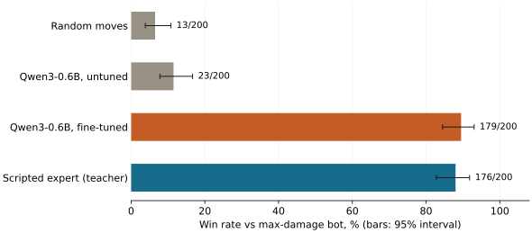

Let’s use compute / Pokémon
Qwen learns Pokémon
A 0.6B model went from 23 wins to 179 out of 200 battles by copying a bot that knows a few rules.
Here is a turn from a random battle, written the way our model reads it:
Your active: mimikyubusted (Ghost/Fairy), 51% HP.
Opponent active: greedent (Normal), 95% HP.
Options:
1. Use shadowsneak: Ghost, physical, power 40 (same type), x0 vs greedent.
2. Use playrough: Fairy, physical, power 90 (same type), x1 vs greedent, 90% accuracy.
3. Use drainpunch: Fighting, physical, power 75, x2 vs greedent.
4. Use swordsdance: Normal, status.
5. Switch to alcremiesaltedcream: Fairy, 100% HP; …
6. Switch to kommoo: Dragon/Fighting, 100% HP; …
7. Switch to slaking: Normal, 100% HP; …
Reply with the number of the best option.Ghost moves do nothing to a Normal type. Fighting does double. The answer is 3. On held-out turns like this, untuned Qwen3-0.6B picks the same option as our scripted teacher 18% of the time. After one LoRA fine-tune it agrees 96.7% of the time, and wins like it.
The whole experiment, simulator included, ran as a single job on one H100. We spent $2.07.
A battle server inside the job
The issue’s worry was setup: Pokémon Showdown is a Node.js server, and our training script is Python. Every run downloads Node, fetches a pinned Showdown commit, runs npm install, builds it and starts it on localhost. poke-env connects bots to it over a websocket.
That took 13 seconds. Installing PyTorch and friends into the image took 86. Training took 18 minutes.
We play gen9randombattle: both sides get six random Pokémon with sensible movesets, so there is no team building. The opponent in every evaluation is poke-env’s max-damage bot, which always picks its highest base-power move.
A teacher with a few rules
poke-env ships SimpleHeuristicsPlayer: estimate damage from type matchups, stats and accuracy; set up stat boosts when safe; lay hazards early; switch out of terrible matchups. It is a few dozen lines of Python. We turned off terastallization so the teacher plays the same moves the model can.
It played 3,000 battles against the max-damage bot, a random player and itself. Each decision became one prompt and one digit: 65,815 examples. We trained a rank-16 LoRA adapter on the answer digit only, one pass through the data.
At play time the model never writes text. We read its scores for digits 1 through the number of options and take the highest. The untuned model gets exactly the same treatment, so it can’t lose on formatting.
200 battles each

| Player | Won | 95% interval |
|---|---|---|
| Random legal moves | 13/200 | 4–11% |
| Qwen3-0.6B, untuned | 23/200 | 8–17% |
| Qwen3-0.6B, fine-tuned | 179/200 | 84–93% |
| Scripted expert (teacher) | 176/200 | 83–92% |
The untuned model is barely better than random, even with every type multiplier spelled out in front of it.
The fine-tuned model wins 179 and its teacher 176. Those intervals overlap almost entirely: the student caught up with the teacher, and 200 battles cannot say more. It also wins faster, needing 4,118 decisions for 200 battles where the untuned model needed 7,399.
What this does not show
Imitation copies the teacher, ceiling included. Our teacher is a short rule list, and we only tested against one weaker bot. Beating human players would take a stronger teacher or reinforcement learning on wins and losses. The issue listed a short GRPO pass as optional. We did not run it.
The prompt also does some of the thinking: it states type multipliers and base stats, the same inputs the heuristic uses. A model that had to recall type charts from Pokémon names would be a harder, more interesting test.
Run it yourself
The full H100 run cost $1.78 for 30 billed minutes. A pipeline check with 60 teacher battles cost $0.29 and already moved the model from 2 to 14 wins out of 20.
With Compute set up and train.py downloaded:
compute run train.py::train --gpu runpod/H100-SXM --dry-run
compute run train.py::train --gpu runpod/H100-SXM \
--args '{"sample": true}' --timeout 1800 --wait
compute run train.py::train --gpu runpod/H100-SXM --timeout 3600 --waitReview the quote before confirming spend. The reproduction guide has the training settings, timings, publishing and artifact retrieval. There are also instructions for an agent.